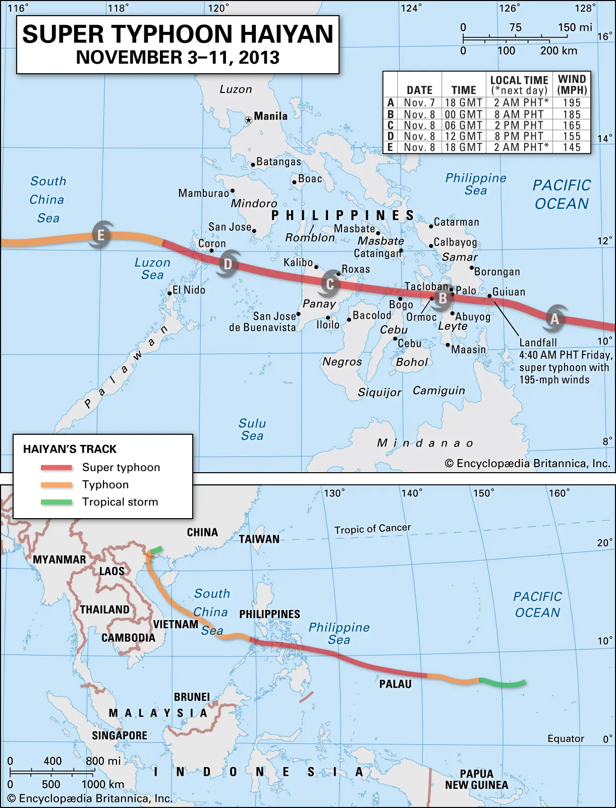
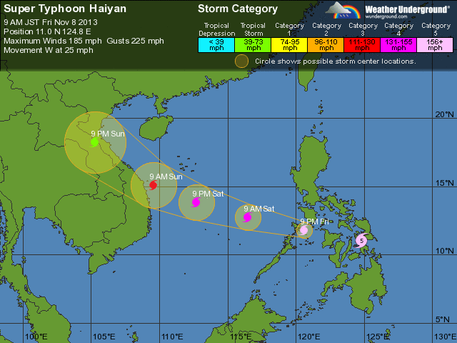

Typhoon Yolanda
Group 2: Franchezca Garcia, Shania Salvania, Nina Talha, Pamela Morante, Chloe Cano

Typhoon Haiyan, also known as Typhoon Yolanda, was a massive and extremely destructive storm in the North Pacific that struck Palau, the Philippines, Vietnam, and China during early November 2013. The path of Typhoon Haiyan/Yolanda is depicted on the map.
In the land areas it passed through, the tropical cyclone caused high winds, coastal storm surges, heavy rainfall, and flooding. The central Philippines was by far the worst-affected region, where the storm caused massive devastation and numerous deaths. Many viewed it as the worst natural disaster in the country's history. Yolanda struck the Philippines on November 8, 2013, with winds of 195 mph, making it the toughest tropical cyclone to make landfall in recorded history.
